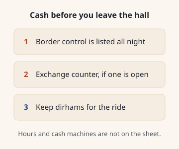

Cash and ATMs at Marrakech airport
Change a small amount in the public hall if a counter is open. Hours are not stated, a cash machine is not named, and passport control is marked all night.
Change a small amount in the public hall Source-checked 20 Oct 2026 Sources if a counter is open, ask for the dirham total first, and keep the slip.
There is an exchange office at the airport Source-checked 26 Oct 2026 Sources, some counters are also listed in the customs area Source-checked 20 Oct 2026 Sources, no opening hours Source-checked 26 Oct 2026 Sources are given, and a cash machine is not named Source-checked 26 Oct 2026 Sources.
Passport control is marked H24 Source-checked 26 Oct 2026 Sources, all day and all night, so a night landing still reaches the hall, and that mark is not the counter's hours.
If the counter is shut, a 2023 Source-checked 20 Oct 2026 Sources announcement describes a desk at the arrivals exit where you pay card or cash Source-checked 20 Oct 2026 Sources, on a system that runs 24 hours a day, 7 days a week Source-checked 20 Oct 2026 Sources, and it gives no fare Source-checked 20 Oct 2026 Sources.
Read the taxi figure and the bus 19 figure on Marrakech airport to the medina before you decide how much to change.
Dirham notes you carry across the border are no more than 2,000 MAD Unconfirmed Sources, with the same line on Entry checks, and a phone line is in SIM card at Marrakech airport.
Last updated 26 Oct 2026.
Written by Omar Oujoud in Casablanca. Research drafting is AI-assisted; observations are recorded in person. How we check
Jump to what’s still being checked · sources
How we checked
The exchange line was read in the Morocco AIP for Menara, sheet AD 2.5, opened in a browser. The header on that sheet is 26 December 2023 Source-checked 26 Oct 2026 Sources. The French column names an exchange counter at the airport, then a post office. The English column names an exchange office at the airport, then a post office. Same row, no hours, no rate, and no cash machine. The two languages do not disagree.
The hours sheet is AD 2.3. Its header is 26 December 2024 Source-checked 26 Oct 2026 Sources. Customs and immigration are H24 Source-checked 26 Oct 2026 Sources in both language columns. A different row on that sheet is the airport office. That row has its own clock and a Ramadan line. It is not the counter, so the clock is not used here.
The operator's French and English exchange pages did not open. A direct request returned a block page. The earlier record still stands: counters in the public hall, some of them also in the customs area, and no hours.
The central bank's foreign-banknote page was opened in English and in French. The two languages showed the same figures. The page does not say a counter at Menara has to use them, so the figures are not printed here.
Office des Changes did not open, in a browser or by a direct request. The dirham-note line and the declaration line stay the earlier records.
The taxi and bus prices in dirhams stay on the ride guide. Nothing here was seen at the airport.

At a glance
An exchange counter is listed in the public hall, and some counters are also listed in the customs area. No clock is given for it. A cash machine is not named.
| Detail | Exchange counter | Cash machine | Dirham notes you carry in |
|---|---|---|---|
| Where | At the airport Source-checked 26 Oct 2026 Sources, in the public hall, some also in the customs area Source-checked 20 Oct 2026 Sources | Not named Source-checked 26 Oct 2026 Sources | Not yet confirmed |
| Hours | No hours given Source-checked 26 Oct 2026 Sources | Not yet confirmed | Not yet confirmed |
| Amount named | Not yet confirmed | Not yet confirmed | no more than 2,000 MAD Unconfirmed Sources |
| Night landing | Passport control H24 Source-checked 26 Oct 2026 Sources. Counter hours Not yet confirmed | Not yet confirmed | Not yet confirmed |
The taxi fare and the bus fare are dirham amounts. They are on Marrakech airport to the medina.
Step by step
Our advice: do the money before you leave the hall. A counter you have walked past is harder to find again with a suitcase.
- You clear the border first. Customs and immigration are H24 Source-checked 26 Oct 2026 Sources. A late flight still reaches that desk.
- There is an exchange office at the airport Source-checked 26 Oct 2026 Sources and a post office at the airport Source-checked 26 Oct 2026 Sources. A post office does not buy your notes. Counters are in the public hall Source-checked 20 Oct 2026 Sources, and some are also listed in the customs area Source-checked 20 Oct 2026 Sources. If you are already in the public hall, start there.
- Before you hand the notes over, ask to see the rate and the dirham total. If they write a slip, keep it. What that slip does when you leave Morocco is not on these pages.
- Open Marrakech airport to the medina and read the taxi figure and the bus figure. Change enough for the ride you will actually take, plus a little for the first hour.
- A 2023 Source-checked 20 Oct 2026 Sources announcement describes a taxi desk at the arrivals exit where you pay by card or cash before the ride Source-checked 20 Oct 2026 Sources. It says the computer system runs 24 hours a day, 7 days a week Source-checked 20 Oct 2026 Sources. It gives no fare Source-checked 20 Oct 2026 Sources, and it does not say a foreign card will work.
- The rank itself is a taxi station on the esplanade Source-checked 20 Oct 2026 Sources. If you want a phone line before that walk, use SIM card at Marrakech airport. Landing at the other city is Casablanca airport. A cash guide for that terminal is not written yet.
Phrases, if you need them:
- Le cours, et le montant en dirhams, avant de changer, s'il vous plaît. The rate, and the amount in dirhams, before I change money, please.
- من فضلك، أريد أن أرى سعر الصرف والمبلغ بالدرهم قبل أن أبدل. I want to see the rate and the dirham amount before I change money.
The edge case
You land late, the hall is quiet, and no counter is staffed. The exchange office is still listed, with no opening hours Source-checked 26 Oct 2026 Sources and a cash machine not named Source-checked 26 Oct 2026 Sources. Passport control is still H24 Source-checked 26 Oct 2026 Sources. That gets you into the hall. It does not open a counter.
The taxi desk in the 2023 Source-checked 20 Oct 2026 Sources announcement is described as taking card or cash Source-checked 20 Oct 2026 Sources on a system that runs 24 hours a day, 7 days a week Source-checked 20 Oct 2026 Sources. Whether that desk is still there, and whether your card will be accepted, is not in the announcement. The ride guide has the taxi figure and the bus figure, including the night taxi figure. Read it before you leave the hall. If the counter was shut, you are relying on notes you already hold, or on a card at that desk.
Ramadan is not mentioned on the exchange row. The airport-office row on the hours sheet has a Ramadan line. That line belongs to the office, not the counter.
Our advice: if the counter is dark, do not hunt the building for a machine these pages never name. Use the notes you have, or the card, for the ride, and change money once you are in town.
What to watch for
Our advice: the decision is the dirham total you can read before your notes leave your hand.
- Two zones, one list. Some counters are listed in the customs area and in the public hall. The pages do not say which door you use on the way in, or on the way out. Once you are in the public hall, start there.
- A post office on the same row. The passenger sheet lists a post office at the airport Source-checked 26 Oct 2026 Sources beside the exchange office. A post office does not buy your notes.
- A rate you only see afterwards. Ask for the dirham total first. A higher total than you hoped for is the price you were offered.
- The airport-office clock. The hours sheet has a row for the airport office. It is not the exchange counter, so do not use that clock for the counter.
- Home currency at the taxi desk. The announcement says card or cash. It does not say the desk will charge you in the currency of your card. Read the dirham figure on the ride guide, and the figure on any screen the desk shows you.
- Notes you brought from home. Dirham notes are no more than 2,000 MAD Unconfirmed Sources. Foreign cash of 100,000 MAD equivalent or more Unconfirmed Sources is the declaration line. Both amounts are still unconfirmed.
- The other airport. Menara is RAK. Mohammed V, at Casablanca, is a different terminal. Do not use this page for that arrival.
Still being checked
Not yet confirmed, so not stated as fact on this page:
- Whether a cash machine stands in the arrivals hall, whether it takes a foreign card, and what it charges. The passenger sheet does not name one. The operator's exchange pages do not mention one either, and they did not open again on this check.
- Opening hours of the exchange office, including a landing after midnight. The passenger sheet gives none. The operator pages give none.
- Whether every counter on the operator's exchange page changes cash. The passenger sheet, separately, lists a post office beside the exchange office, and a post office does not buy your notes.
- The dirham amount a counter pays for one euro, one US dollar or one pound, and whether the counter uses the central bank's banknote rate. That rate was read in English and in French and is not printed here.
- Whether a counter listed in the customs area is reachable on arrival, on departure, or both.
- What a counter asks you to show, and whether the slip lets you change dirhams back at the airport when you fly home.
- No more than 2,000 MAD Unconfirmed Sources in dirham notes across the border. The Office des Changes page did not open.
- Cash of 100,000 MAD equivalent or more Unconfirmed Sources declared on the way in, and the declaration you would need to take that cash out again. The instruction PDF did not open.
- Whether the taxi desk from the 2023 Source-checked 20 Oct 2026 Sources announcement is still at the arrivals exit, and whether a foreign card works there.
Next on your route.
Each guide covers one step of the journey.
Sources for this page
Every fact on this page shows when it was checked and links here to its source. What the badges mean.
- Marrakech airport exchange counters: ONDA, ONDA, page 2. Reviewed 20 Oct 2026.
- Exchange office on the Menara aeronautical sheet: Siamaroc. Reviewed 26 Oct 2026.
- Customs and immigration hours on the Menara aeronautical sheet: Siamaroc. Reviewed 26 Oct 2026.
- Marrakech airport taxi desk announcement: ONDA. Reviewed 20 Oct 2026.
- Dirham banknotes at the border: Office des Changes. Reviewed 30 Sep 2026.
- Marrakech airport taxi rank and bus: ONDA, ONDA, page 2. Reviewed 20 Oct 2026.
- Declaring foreign currency: Office des Changes. Reviewed 30 Sep 2026.